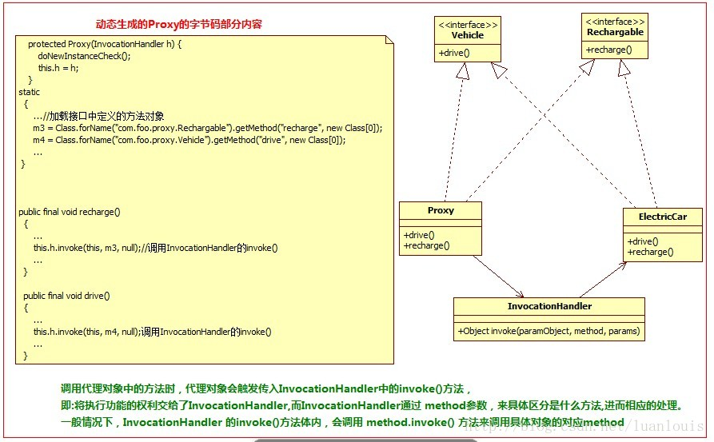

class文件简介及加载
Java编译器编译好Java文件之后，产生.class 文件在磁盘中。这种class文件是二进制文件，内容是只有JVM虚拟机能够识别的机器码。JVM虚拟机读取字节码文件，取出二进制数据，加载到内存中，解析.class 文件内的信息，生成对应的 Class对象:

class字节码文件是根据JVM虚拟机规范中规定的字节码组织规则生成的、具体class文件是怎样组织类信息的，可以参考 此博文：深入理解Java Class文件格式系列。或者是Java虚拟机规范。
下面通过一段代码演示手动加载 class文件字节码到系统内，转换成class对象，然后再实例化的过程：
a. 定义一个 Programmer类：
b. 自定义一个类加载器：
c. 然后编译成Programmer.class文件，在程序中读取字节码，然后转换成相应的class对象，再实例化：
以上代码演示了，通过字节码加载成class 对象的能力，下面看一下在代码中如何生成class文件的字节码。
在运行期的代码中生成二进制字节码
由于JVM通过字节码的二进制信息加载类的，那么，如果我们在运行期系统中，遵循Java编译系统组织.class文件的格式和结构，生成相应的二进制数据，然后再把这个二进制数据加载转换成对应的类，这样，就完成了在代码中，动态创建一个类的能力了。
在运行时期可以按照Java虚拟机规范对class文件的组织规则生成对应的二进制字节码。当前有很多开源框架可以完成这些功能，如ASM，Javassist。
Java字节码生成开源框架介绍--ASM：
ASM 是一个 Java 字节码操控框架。它能够以二进制形式修改已有类或者动态生成类。ASM 可以直接产生二进制 class 文件，也可以在类被加载入 Java 虚拟机之前动态改变类行为。ASM 从类文件中读入信息后，能够改变类行为，分析类信息，甚至能够根据用户要求生成新类。
不过ASM在创建class字节码的过程中，操纵的级别是底层JVM的汇编指令级别，这要求ASM使用者要对class组织结构和JVM汇编指令有一定的了解。
下面通过ASM 生成下面类Programmer的class字节码：
使用ASM框架提供了ClassWriter 接口，通过访问者模式进行动态创建class字节码，看下面的例子：
上述的代码执行过后，用Java反编译工具（如JD_GUI）打开D盘下生成的Programmer.class，可以看到以下信息：
再用上面我们定义的类加载器将这个class文件加载到内存中，然后 创建class对象，并且实例化一个对象，调用code方法，会看到下面的结果：
以上表明：在代码里生成字节码，并动态地加载成class对象、创建实例是完全可以实现的。
Java字节码生成开源框架介绍--Javassist：
Javassist是一个开源的分析、编辑和创建Java字节码的类库。是由东京工业大学的数学和计算机科学系的 Shigeru Chiba （千叶 滋）所创建的。它已加入了开放源代码JBoss 应用服务器项目,通过使用Javassist对字节码操作为JBoss实现动态AOP框架。javassist是jboss的一个子项目，其主要的优点，在于简单，而且快速。直接使用java编码的形式，而不需要了解虚拟机指令，就能动态改变类的结构，或者动态生成类。
下面通过Javassist创建上述的Programmer类：
通过JD-gui反编译工具打开Programmer.class 可以看到以下代码：
代理的基本构成：
代理模式上，基本上有Subject角色，RealSubject角色，Proxy角色。其中：Subject角色负责定义RealSubject和Proxy角色应该实现的接口；RealSubject角色用来真正完成业务服务功能；Proxy角色负责将自身的Request请求，调用realsubject 对应的request功能来实现业务功能，自己不真正做业务。
上面的这幅代理结构图是典型的静态的代理模式：
当在代码阶段规定这种代理关系，Proxy类通过编译器编译成class文件，当系统运行时，此class已经存在了。这种静态的代理模式固然在访问无法访问的资源，增强现有的接口业务功能方面有很大的优点，但是大量使用这种静态代理，会使我们系统内的类的规模增大，并且不易维护；并且由于Proxy和RealSubject的功能 本质上是相同的，Proxy只是起到了中介的作用，这种代理在系统中的存在，导致系统结构比较臃肿和松散。
为了解决这个问题，就有了动态地创建Proxy的想法：在运行状态中，需要代理的地方，根据Subject 和RealSubject，动态地创建一个Proxy，用完之后，就会销毁，这样就可以避免了Proxy 角色的class在系统中冗杂的问题了。
下面以一个代理模式实例阐述这一问题：
将车站的售票服务抽象出一个接口TicketService,包含问询，卖票，退票功能，车站类Station实现了TicketService接口，车票代售点StationProxy则实现了代理角色的功能，类图如下所示。
对应的静态的代理模式代码如下所示：
由于我们现在不希望静态地有StationProxy类存在，希望在代码中，动态生成器二进制代码，加载进来。为此，使用Javassist开源框架，在代码中动态地生成StationProxy的字节码：
上述代码执行过后，会产生StationProxy的字节码，并且用生成字节码加载如内存创建对象，调用inquire()方法，会得到以下结果：
通过上面动态生成的代码，我们发现，其实现相当地麻烦在创造的过程中，含有太多的业务代码。我们使用上述创建Proxy代理类的方式的初衷是减少系统代码的冗杂度，但是上述做法却增加了在动态创建代理类过程中的复杂度：手动地创建了太多的业务代码，并且封装性也不够，完全不具有可拓展性和通用性。如果某个代理类的一些业务逻辑非常复杂，上述的动态创建代理的方式是非常不可取的！
InvocationHandler角色的由来
仔细思考代理模式中的代理Proxy角色。Proxy角色在执行代理业务的时候，无非是在调用真正业务之前或者之后做一些“额外”业务。
有上图可以看出，代理类处理的逻辑很简单：在调用某个方法前及方法后做一些额外的业务。换一种思路就是：在触发（invoke）真实角色的方法之前或者之后做一些额外的业务。那么，为了构造出具有通用性和简单性的代理类，可以将所有的触发真实角色动作交给一个触发的管理器，让这个管理器统一地管理触发。这种管理器就是Invocation Handler。
动态代理模式的结构跟上面的静态代理模式稍微有所不同，多引入了一个InvocationHandler角色。
先解释一下InvocationHandler的作用：
在静态代理中，代理Proxy中的方法，都指定了调用了特定的realSubject中的对应的方法：
在上面的静态代理模式下，Proxy所做的事情，无非是调用在不同的request时，调用触发realSubject对应的方法；更抽象点看，Proxy所作的事情；在Java中 方法（Method）也是作为一个对象来看待了，
动态代理工作的基本模式就是将自己的方法功能的实现交给 InvocationHandler角色，外界对Proxy角色中的每一个方法的调用，Proxy角色都会交给InvocationHandler来处理，而InvocationHandler则调用具体对象角色的方法。如下图所示：

在这种模式之中：代理Proxy 和RealSubject 应该实现相同的功能，这一点相当重要。（我这里说的功能，可以理解为某个类的public方法）
在面向对象的编程之中，如果我们想要约定Proxy 和RealSubject可以实现相同的功能，有两种方式：
a.一个比较直观的方式，就是定义一个功能接口，然后让Proxy 和RealSubject来实现这个接口。
b.还有比较隐晦的方式，就是通过继承。因为如果Proxy 继承自RealSubject，这样Proxy则拥有了RealSubject的功能，Proxy还可以通过重写RealSubject中的方法，来实现多态。
其中JDK中提供的创建动态代理的机制，是以a 这种思路设计的，而cglib 则是以b思路设计的。
JDK的动态代理创建机制----通过接口
比如现在想为RealSubject这个类创建一个动态代理对象，JDK主要会做以下工作：
1. 获取 RealSubject上的所有接口列表；
2. 确定要生成的代理类的类名，默认为：com.sun.proxy.$ProxyXXXX ；3. 根据需要实现的接口信息，在代码中动态创建 该Proxy类的字节码；
4 . 将对应的字节码转换为对应的class 对象；
5. 创建InvocationHandler 实例handler，用来处理Proxy所有方法调用；
6. Proxy 的class对象 以创建的handler对象为参数，实例化一个proxy对象
JDK通过 java.lang.reflect.Proxy包来支持动态代理，一般情况下，我们使用下面的newProxyInstance方法
而对于InvocationHandler，我们需要实现下列的invoke方法：
static ObjectnewProxyInstance(ClassLoader loader,Class<?>[] interfaces,InvocationHandler h)
返回一个指定接口的代理类实例，该接口可以将方法调用指派到指定的调用处理程序。在调用代理对象中的每一个方法时，在代码内部，都是直接调用了InvocationHandler 的invoke方法，而invoke方法根据代理类传递给自己的method参数来区分是什么方法。
讲的有点抽象，下面通过一个实例来演示一下吧：
JDK动态代理示例
现在定义两个接口Vehicle和Rechargable，Vehicle表示交通工具类，有drive()方法；Rechargable接口表示可充电的（工具），有recharge() 方法；
定义一个实现两个接口的类ElectricCar，类图如下：
通过下面的代码片段，来为ElectricCar创建动态代理类：
来看一下代码执行后的结果：
生成动态代理类的字节码并且保存到硬盘中：
JDK提供了sun.misc.ProxyGenerator.generateProxyClass(String proxyName,class[] interfaces) 底层方法来产生动态代理类的字节码：
下面定义了一个工具类，用来将生成的动态代理类保存到硬盘中：
现在我们想将生成的代理类起名为“ElectricCarProxy”，并保存在硬盘，应该使用以下语句：
这样将在ElectricCar.class 同级目录下产生 ElectricCarProxy.class文件。用反编译工具如jd-gui.exe 打开，将会看到以下信息：ProxyUtils.generateClassFile(car.getClass(), "ElectricCarProxy");
仔细观察可以看出生成的动态代理类有以下特点:1.继承自 java.lang.reflect.Proxy，实现了 Rechargable,Vehicle 这两个ElectricCar实现的接口；
2.类中的所有方法都是final 的；
3.所有的方法功能的实现都统一调用了InvocationHandler的invoke()方法。

cglib 生成动态代理类的机制----通过类继承：
JDK中提供的生成动态代理类的机制有个鲜明的特点是： 某个类必须有实现的接口，而生成的代理类也只能代理某个类接口定义的方法，比如：如果上面例子的ElectricCar实现了继承自两个接口的方法外，另外实现了方法bee() ,则在产生的动态代理类中不会有这个方法了！更极端的情况是：如果某个类没有实现接口，那么这个类就不能同JDK产生动态代理了！
幸好我们有cglib。“CGLIB（Code Generation Library），是一个强大的，高性能，高质量的Code生成类库，它可以在运行期扩展Java类与实现Java接口。”
cglib 创建某个类A的动态代理类的模式是：
1. 查找A上的所有非final 的public类型的方法定义；
2. 将这些方法的定义转换成字节码；
3. 将组成的字节码转换成相应的代理的class对象；
4. 实现 MethodInterceptor接口，用来处理 对代理类上所有方法的请求（这个接口和JDK动态代理InvocationHandler的功能和角色是一样的）
一个有趣的例子：定义一个Programmer类，一个Hacker类
程序执行结果：
让我们看看通过cglib生成的class文件内容：